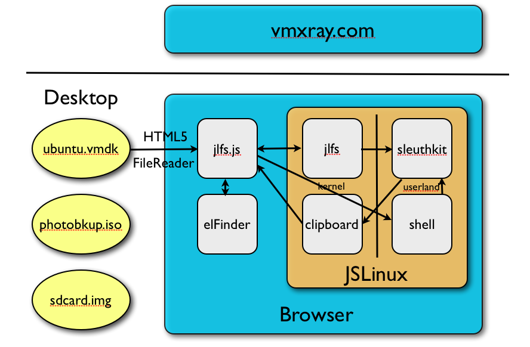

Say you have a VMWare disk image (.vmdk file) or a CD image (.iso file) on your desktop and would like to look at the files inside. Perhaps there are a couple of files you would like to extract. You could start the virtual machine to access its files (What was the damn administrator password again?), or install a bunch of utilities to let you mount the image as a filesystem. Or, you could use VMXray, which, being a pure web app, requires no installation at all
You could also look at other filesystem dumps (FAT, ext2, NTFS) in various formats (qcow2, raw). We haven't tested all combinations.
In theory, you can recover deleted photos from raw dumps of your camera's SD card. It might be a little slow, though.
What about the privacy of my data?
No data from your files is ever sent over the network. The privacy of your data is assured for the simple reason that it never leaves your machine. VMXRay does all its magic completely inside your browser.
What browsers are supported?
VMXRay uses bleeding edge HTML5 features like the FileReader API to access local files. Not all browsers support it, and even in those which do, API support is evolving. Currently, we know of the following browsers on which browsing of images and preview of files work:
Google Chrome 13+ (Mac OS X, Ubuntu)
Firefox 7+ (Mac OS X, Ubuntu)
Opera 11+ (Mac OS X)
Downloading of files works properly only on Chrome.
Is it free?
The short answer is "yes". The longer answer is here.
How does it work?
Briefly,

A Linux virtual machine runs inside your browser. This is Fabrice Bellard'sJSLinux, an x86 emulator implemented in Javascript. We use a custom kernel and root filesystem.
We have developed a special filesystem, jlfs, runs on the Linux virtual machine, and its browser-side counterpart (jlfs.js) enable Linux applications to access files via the HTML5 FileReader API.
A fork of Sleuthkit, a filesystem forensics tool is run on the Linux virtual machine to provide directory and file data.
A fork of the beautiful elFinder is used to present a folder interface to the file system
There is no server-side processing; everything happens within the browser.